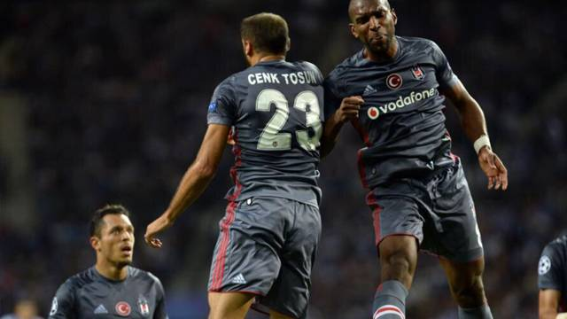
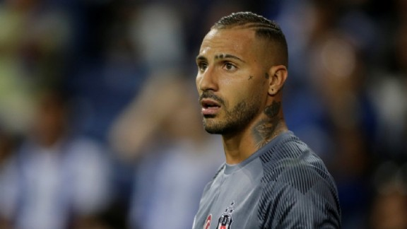
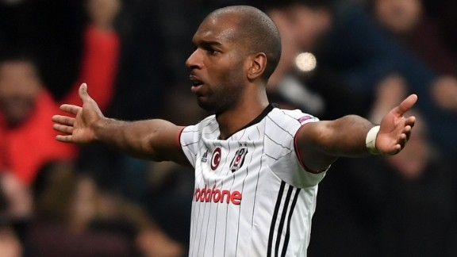

Babel weer belangrijk voor Besiktas: ’Ik ben nu een completere speler’
Lees Meer

Solo Quaresma hoogtepunt bij foutloze generale repetitie Besiktas
Lees Meer

Mijn hobby is voetbal en mijn favoriete voetbalteam is Beşiktaş.
Beşiktaş is een Turkse voetbalclub uit Istanboel. De club is opgericht in 1903 en speelt zijn thuiswedstrijden in de Vodafone Park. Ze staan op dit moment 2e in de competitie en 1e in de Champions League Groep G.